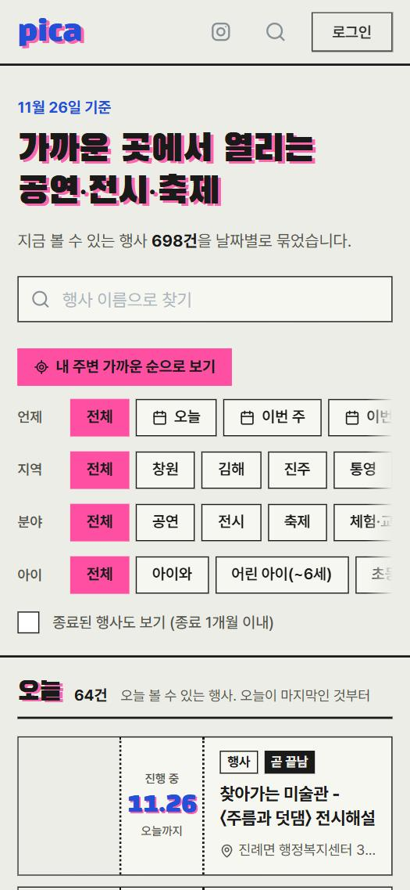
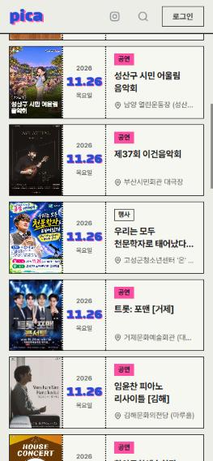
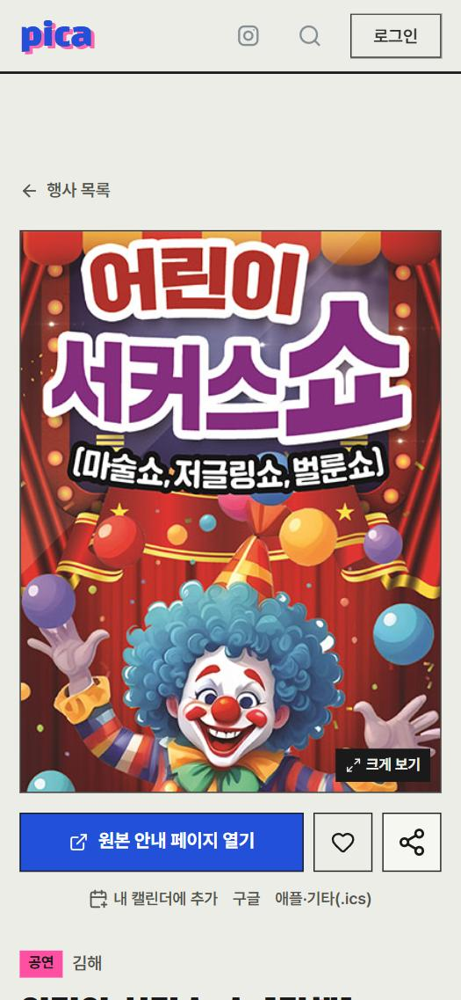
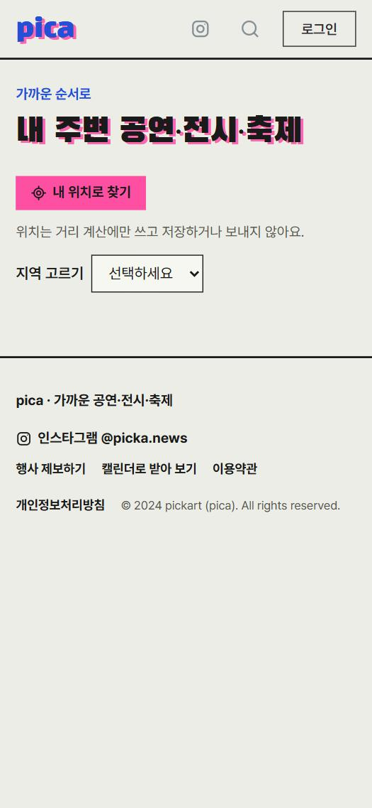

PICA · 2026.11.26 · 디자인 개선 계획
결론: 휴대폰 첫 화면에서 행사가 거의 보이지 않는 것이 가장 큰 문제다. 다른 분야에서 가져올 패턴 8개 가운데 공수가 작은 4개(필터 막대 고정, 카드 정리, 상세 하단 고정 버튼, 빈 상태)로 먼저 푼다.
같이 정할 것: 사이트는 아직 예전 리소 테마(회색 신문지·파랑·형광 분홍)다. 11/01에 확정한 「까치 우편」 4색으로 바꾸는 일을 1단계와 함께 하면 화면을 두 번 고치지 않는다.
근거: picka.news를 375×812(휴대폰) 크기로 직접 열어 본 화면 4곳 + 다른 분야 앱·사이트 11곳 조사(조사 문서).




홈 첫 화면에 행사가 없다. 큰 제목, 검색창, 「내 주변」 버튼, 필터 네 줄(언제·지역·분야·아이)이 첫 화면을 다 쓰고, 첫 카드는 화면 아래에 일부만 보인다.
2카드가 같은 정보를 반복한다. 날짜로 묶은 「오늘」 안에서도 카드마다 「2026 · 11.26 · 목요일」 칸이 카드 폭의 3분의 1을 쓴다. 대신 공연 시각·관람료는 카드에 없다. KOPIS 제목 끝의 「[거제]」 같은 지역 꼬리도 지역 칸과 겹친다.
3상세는 정보보다 포스터가 먼저다. 휴대폰에서 제목·기간·장소를 보려면 스크롤해야 한다. 「원본 안내 페이지 열기」는 데스크톱에서만 고정(lg:sticky)이라 휴대폰에서는 스크롤하면 사라진다. 머리말 아래에 빈 띠도 있다.
빈 화면이 다음 행동을 알려 주지 않는다. 「내 주변」은 위치를 허락하거나 지역을 고르기 전에는 행사가 0건이다.
5포스터 없는 행사가 169건이다(공개 중인 행사 기준, 11/26 조회). 카드에 빈 회색 칸으로 보인다.
6사이트 색이 브랜드와 다르다. 브랜드 가이드 2절은 크림·청회색·먹·우체통 빨강 4색이지만 사이트는 리소 테마다. 가이드 스스로 「사이트 색 전환은 따로 하는 코드 작업」이라고 적어 두었다. 꼬리말은 「© 2024」로 남아 있다.
행사 목록 서비스가 아닌 곳에서 골랐다. 브랜드 가이드(날짜가 주인공, 작은 무대를 같은 무게로, 4색, AI 이미지 금지)와 부딪치는 것은 뺐다.
| 순위 | 패턴 | 참고한 곳 | 피카 화면 | 공수 |
|---|---|---|---|---|
| 1 | 「피카가 본 이유」 한 줄을 카드 제목 아래에 보인다(이미 상세에 있는 칸) | Resident Advisor 추천, Apple Music 편집 해설 | 홈 카드 | S |
| 2 | 「피카가 고르는 기준」 공개 페이지: 돈 받고 올리지 않음, 공식 출처 확인, 같은 카드 크기 | 컬리 품질 기준, Luma 추천 기준 | 새 페이지 + 상세 출처 줄 + 꼬리말 | S |
| 3 | 휴대폰 상세 아래 고정 버튼 막대(주 버튼은 「원본 안내 페이지 열기」 하나) | 토스, DICE | 행사 상세 | S |
| 4 | 포스터 없는 행사에 같은 3:4 칸의 글자 포스터(날짜·분야·제목, 그림 생성 없음) | Letterboxd | 홈·찜·내 주변 카드 | M |
| 5 | 장소 화면과 장소별 캘린더 구독 | Spotify 공연장 팔로우, Luma 캘린더 구독 | 상세 장소 줄 → 새 장소 화면 | M |
| 6 | 찜을 시간순 일정표로(이번 주말 / 다음 주 / 곧 끝남 / 끝남 접힘) | Airbnb 여행 목록 | 찜 | S~M |
| 7 | 필터 막대 한 줄을 위에 고정하고, 빈 결과에는 「기간 넓히기」 버튼 하나 | 토스, DICE | 홈 필터, 빈 상태 | S |
| 8 | 공유 미리보기 이미지를 엽서 틀로(날짜가 가장 크게, 포스터는 원본 그대로) | Partiful | 카카오톡·DM 링크 미리보기 | M |
끝 조건: 375×812에서 홈 첫 화면에 카드 3장 이상이 온전히 보임 · 상세 첫 화면에 제목·기간·장소 · 스크롤해도 원본 버튼이 화면에 남음 · 「내 주변」 첫 화면에 행사 1건 이상 · npm run build 통과 · 바꾸기 전후 캡처 비교.
globals.css에 post 테마 값(크림·청회색·먹·우체통 빨강)을 더하고 MainLayout.tsx의 data-pica-theme를 바꾼다(가이드 2절이 적어 둔 방법).끝 조건: 화면 색이 4색 팔레트와 꼬리표 규칙만 씀 · 빨강·청회색이 맞붙는 곳 0 · 본문 명암비 4.5 이상 · 관리자 화면은 그대로.
끝 조건: 공개 행사 카드 중 빈 회색 칸 0 · 기준 페이지가 상세·꼬리말에서 열림 · 찜 화면이 날짜 구간으로 나뉨.
/venues/[id]: 그 장소의 행사, 휴관일·객석(009에서 채운 값), 길찾기, 그 장소만 받는 캘린더 구독(calendar.ics?venue=).끝 조건: 상세 장소 줄에서 장소 화면이 열림 · 장소 구독 주소가 그 장소 행사만 돌려줌 · 카카오톡 공유 미리보기에 엽서 이미지가 보임.